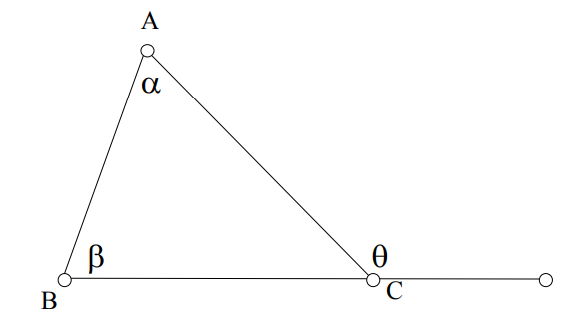
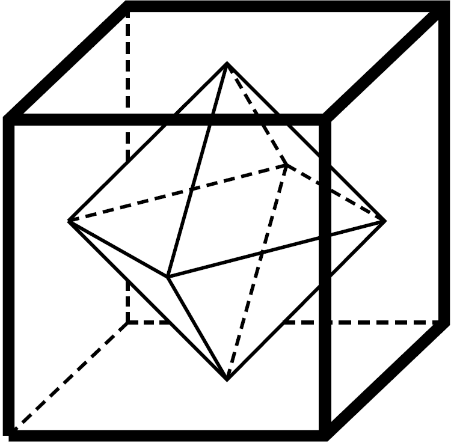

Libros y Cuadernillos

Conceptos Básicos de Geometría
Año de publicación: 2005
Autor: Alejandro ?
Temas:
- Ángulos entre paralelas
- Ángulos en circunferencias
- Cuadriláteros cíclicos
- Teorema de Tales
- Semejanza de triángulos
- Teorema de Pitágoras

Geometría en Olimpiadas de Matemáticas
Año de publicación: 2016
Autor: Jesús Jerónimo Castro
Temas:
- Ángulos entre paralelas
- Ángulos en circunferencias
- Teorema de Tales
- Semejanza de triángulos
- Teorema de Pitágoras
- Cuadriláteros cíclicos
- Potencia de punto
- Áreas de triángulos y cuadriláteros
- Puntos y rectas notables del triángulo
- Teoremas de Ceva y Menelao
- Teorema de Euler
- Teorema de Simson
- Simedianas
- Polígonos circunscritos
- Algunas estrategias en Geometría
Entrenamientos
Año de publicación: 2022
Autor: Eduardo Jaziel Juárez Martínez
Año de publicación: 2022
Autor: Eduardo Jaziel Juárez Martínez
 Congruencia y semejanza de triángulos
Congruencia y semejanza de triángulos
Año de publicación: 2022
Autor: Alfredo Hernández Estrada
Año de publicación: 2020
Autor: Israel Bonal Rodríguez y Jesús Antonio Martínez Miranda